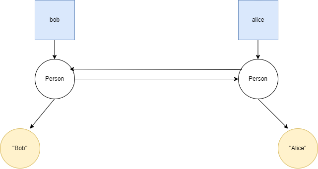
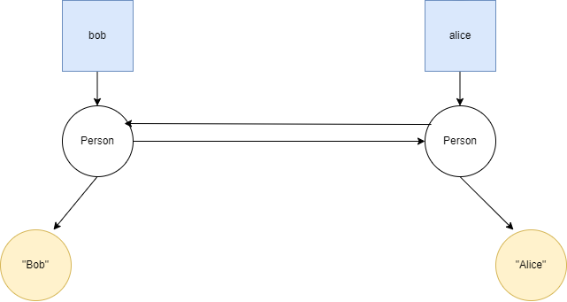

struct Person {
String name;
Person *friend;
};
String name;
Person *friend;
};
And also you've used them like this:
Person alice = {"Alice", NULL};
Person bob = {"bob", NULL};
If you've read the article mentioned above, you will see the problem if we use ARC in this situtation.
If we do
alice.friend = &bob and
bob.friend = &alice we create a circular reference and normal ARC would not be able to garbage collect it since both objects keep referencing each other and prevent the reference count of each other from ever reaching zero.
Solution
If you have again read the article by Swift, you know that using strong and weak pointers prevent this issue.
But MARC doesn't need to use weak pointers
Here is how MARC approaches this issue.
- First, it sets the reference count of all objects to 0
- Then it starts counting the references for all objects
- If object A references B, then the reference count of B is increased and B is added as a "child" of A
- If object B also references A, then we have a problem:
- If neither A or B are referenced by any other object, then both of them are considered dead
- Both A and B are alive if and only if atleast one of the twos objects are being referenced by another object.
- In a programming language, you would implement this by making variables a constant object, that is the variables won't be deleted by MARC. Then the values of the variable will be the obejcts which can be deleted.
Pictorically:
 So for the following Bob and Alice problem:

You can note the following:
So for the following Bob and Alice problem:

You can note the following:
- The objects in square represent the variables bob and alice. They are the so called "constant" objects mentioned earlier. Without these constant objects, the whole structure would be dead.
- The constant objects have a reference to one structure
Person representing the Person struct for bob and alice which we'll call Bob and Alice respectively.
- Each person struct references to a string literal which is their names, and also to the each other which is for their friend field.
MARC would do this:
- Set the reference count of all objects to 0
- Skip the constant objects (because they represent identifiers (or variable names) alice and bob)
- Now for Bob:
- It would increase the reference count of Bob by 1 (because of the constant that is referencing it)
- It finds that Alice has a reference to Bob, so it checks if Bob also has a reference to Alice. It does so now it checks if either Bob or Alice have an object which is referencing them which it is not referencing to. In this case finds that constant alice is referencing to Alice, so it increments reference count of Bob by 1
- It goes over to the "Bob" object and increments its reference count by one.
- Same procedure for Alice too:
- It would increase the reference count of Alice by 1 (because of the constant that is referencing it)
- It finds that Bob has a reference to Alice, so it checks if Alice also has a reference to Bob. It does so now it checks if either Bob or Alice have an object which is referencing them which it is not referencing to. In this case finds that constant bob is referencing to Bob, so it increments reference count of Alice by 1
- It goes over to the "Alice" object and increments its reference count by one.
And thats it, it deems that neither of the two objects should be deallocated. So as long as either bob or alice is alive, neither Bob nor Alice will be dead.